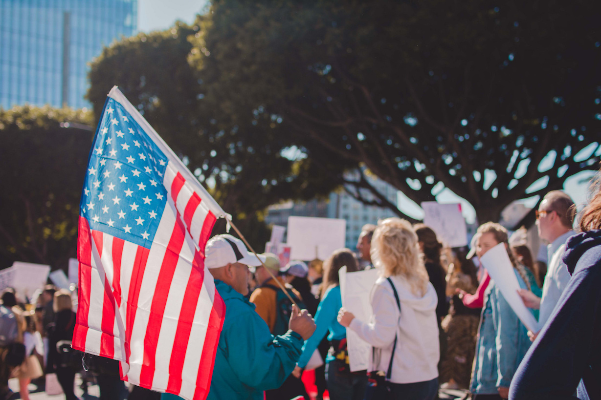
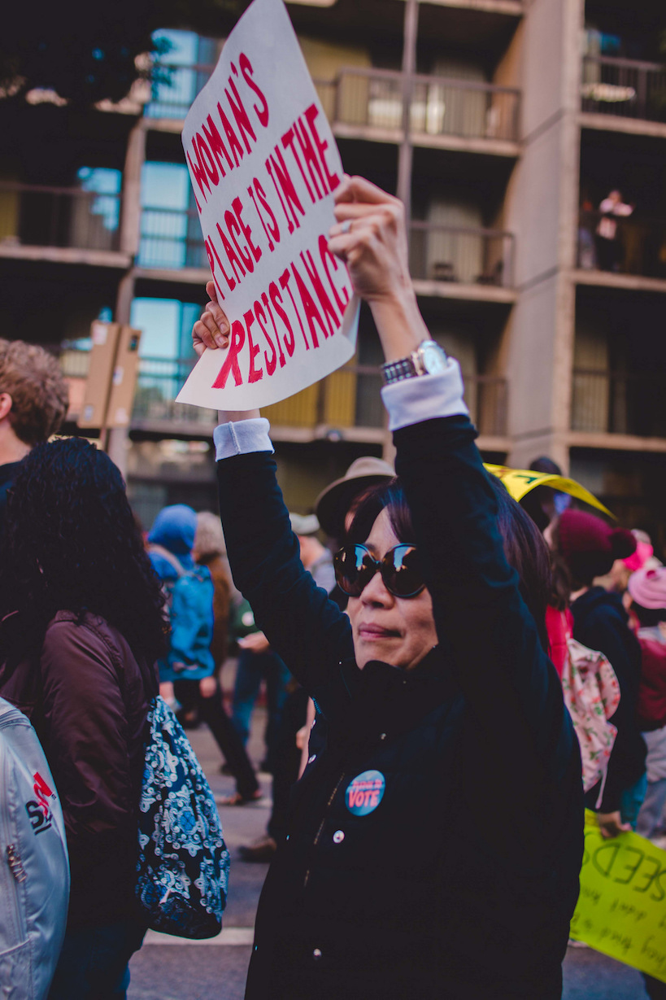
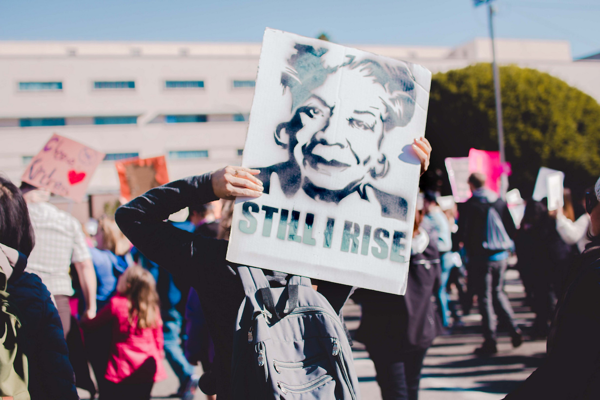
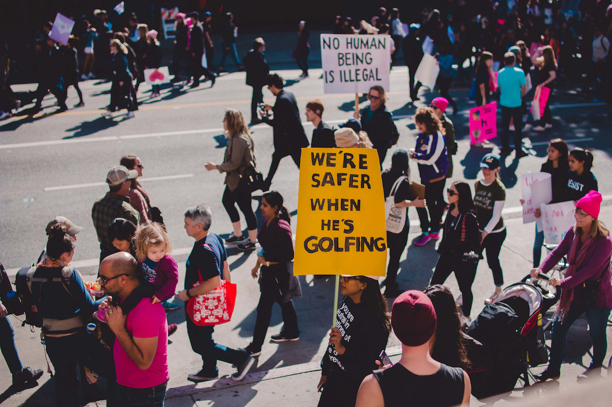
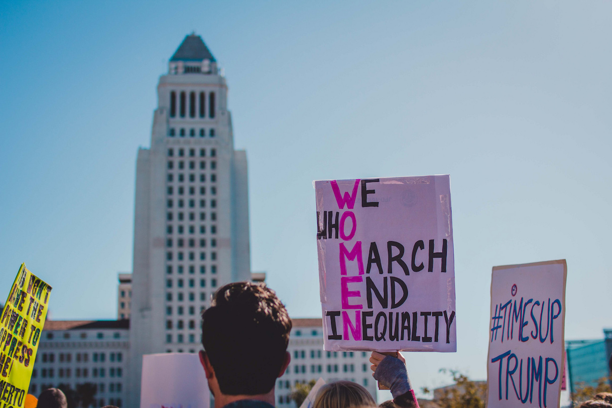
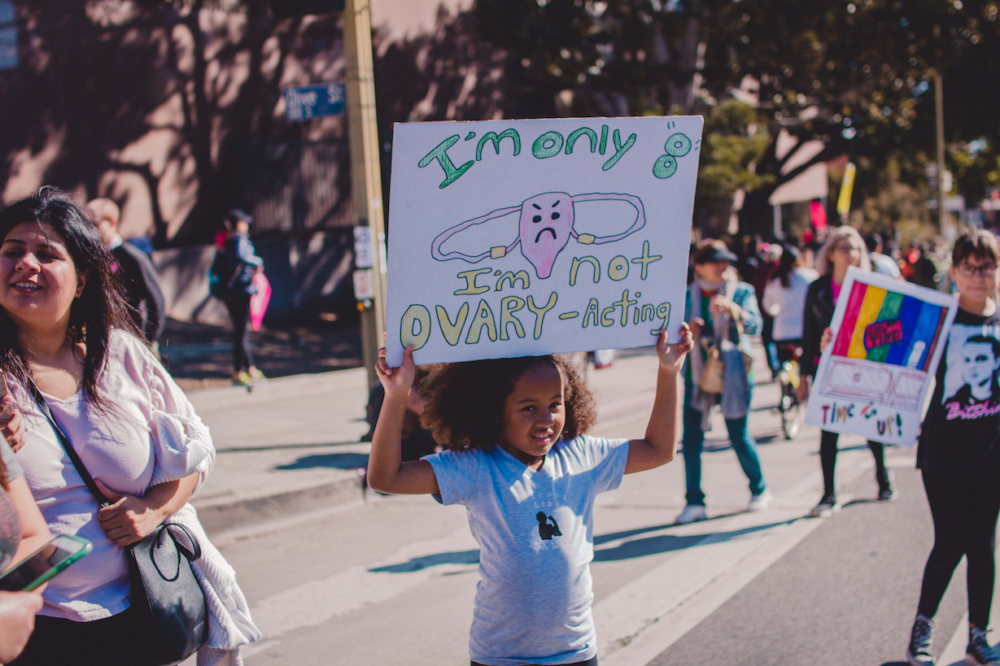

An estimated 200,000 demonstrators flooded Pershing Square for the second Women’s March on Saturday, holding posters calling for women’s rights, disparaging the policies of President Donald Trump and encouraging participants to vote in the Nov. 6 midterm election this year.
While there was a handful of Trump supporters staging an anti-protest, holding signs that read “Make America Great Again” and “Beautiful Women Love Trump,” Women’s March volunteers formed a chain around the anti-protesters and dozens of Los Angeles Police Department officers stood guard. The march remained a peaceful demonstration and police reported no arrests or major incidents.
Jonathon Xue | Daily Trojan
Women's March: the Sequel




Terry Nguyen | Daily Trojan
While last year’s inaugural march — which drew an estimated 750,000 people — centered on the theme “Hear Our Voice,” this year, the focus shifted to “Hear Our Vote.” Thousands of attendees publicized the hashtag #powertothepolls over social media.
Demonstrators marched from Pershing Square to Los Angeles City Hall at 10 a.m, where a number of celebrities gave speeches to the crowds, including actresses Scarlett Johansson, Natalie Portman, Eva Longoria, Olivia Wilde and Viola Davis, who each urged the crowds to keep the momentum of the march going by voting at the midterm elections.
Jonathon Xue | Daily Trojan
Speaking up for #MeToo

Terry Nguyen | Daily Trojan
Some demonstrators found Davis’ speech to be the most impactful. As a sexual assault survivor herself, Davis spoke out about the strength of those who have endured the same experiences she did, encouraging them to use that strength to enact change through voting.
“I am always introduced as an award-winning actor, but my testimony is one of poverty,” Davis said in her speech. “My testimony is one of being sexually assaulted and very much seeing a childhood that was robbed from me, and I know that every single day when I think of that, I know that the trauma of those events are still with me today. And that’s what drives me to the voting booth.”
Jonathon Xue | Daily Trojan
Davis also spoke about the victims of sex trafficking and how women of color are disproportionately affected by it. According to Davis, 70 percent of victims of sex trafficking are girls of color. She spoke about standing up for the women who could not come forward.
“I am speaking today, not just for the #MeToo’s, because I was a #MeToo, but when I raise my hand, I am aware of all the women who are still in silence,” Davis said. “The women who are faceless, the women who don’t have the money … and who don’t have the images in our media that gives them a sense of self-worth enough to break their silence that’s rooted in the shame of assault.”
Vice President of Internal Affairs for the Trojan Advocates for Political Progress Jacob Lind, said that Davis’ speech merged the #MeToo movement with the Women’s March.
“Her ability to connect things like the #MeToo movement, things almost apolitical in nature, to the political action that was the Women’s March itself … was pretty impressive,” Lind said. “It was emotionally powerful and emotionally resonant as well as being a well put together speech about a very pressing issue.”
Jonathon Xue | Daily Trojan
The march for equality

Terry Nguyen | Daily Trojan
Danielle Rucker, another demonstrator at the march, pointed out that the fight for equality is particularly challenging for women of color like herself.
“I’m out here to support fellow women and just make sure that people are understanding the rights that women have, because we do deserve equality in all aspects of our lives,” Rucker said. “I’m a woman [and] I’m black, so I’m a minority in two areas of my life.”
James Lambert Otis, a West Hollywood resident who previously made headlines in October 2016 for taking a sledgehammer to Trump’s star on the Hollywood Walk of Fame, also marched in recognition of this inequality. Sporting a “Black Lives Matter” shirt, Otis marched in opposition of sexual assault and for Trump’s impeachment.
At the march, Otis acknowledged acts of civil disobedience and marching as effective ways to create change and to demonstrate support.
“I think [marching is] one of the greatest nonviolent means to affect change,” Otis said.
“So this is showing the whole world, on the day that the government shutdown, there’s a strong majority of women and men who are against Trump, all of his policies, but especially against his hatred against women and his policies against people of color.”